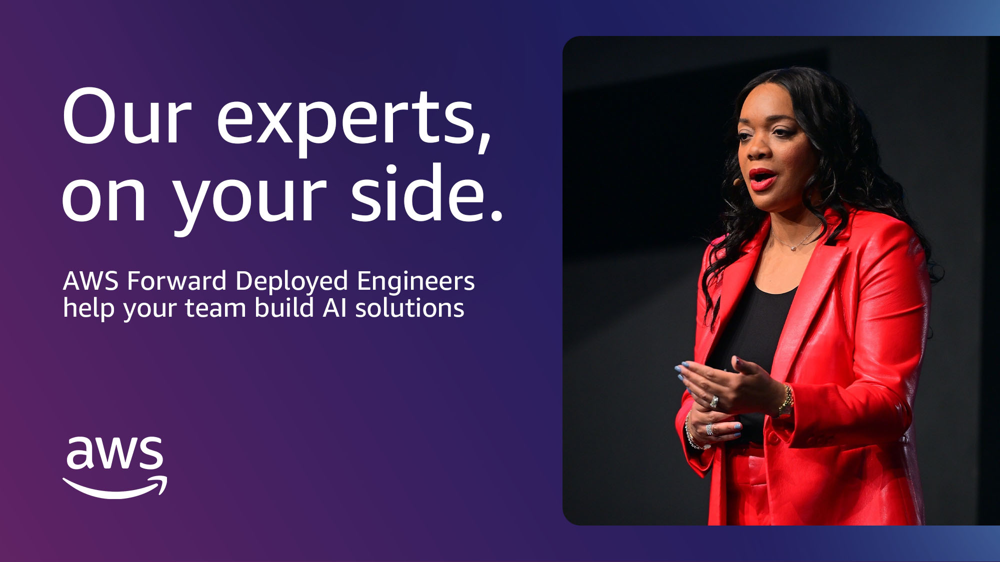

Executive Summary
On July 15, 2026, Anthropic joined Blackstone, Hellman & Friedman, and Goldman Sachs to raise $1.5 billion and launch an "AI implementation company" called Ode with Anthropic. What a model-building company bought this time was not a bigger model, but a firm full of the people who go into enterprises and actually wire AI into the work. This article reads what that capital allocation is saying through the eyes of a data leader.
The line worth sitting with came from Ode's own chief technology officer. Talking about model choice, he said it is "similar to picking a programming language when you build software." An executive at a model company had reduced his own product to one ingredient in a system. The fact that OpenAI, Microsoft, and AWS all placed billion-dollar bets on deployment teams within four months makes that remark no accident.
This is not an article that sets out to re-prove "the bottleneck is data." It looks at where the labs themselves chose to put their money, and translates the bottleneck they call a "talent shortage" into the language of data readiness — what that bottleneck actually is on the enterprise floor.
Of the four numbers below, the first three are the capital that Anthropic, Microsoft, and AWS loaded onto deployment organizations; the last one is the reality that even the most advanced player, Microsoft, has not managed to get people to actually use its own tool. While billions flow toward deployment, real usage sits around 1%.
$1.5B
Ode launch capital
Anthropic, Blackstone, and others
$2.5B
Microsoft Frontier
~6,000 deployment specialists
$1B
AWS deployment engineering
Customers left self-sufficient with knowledge graphs and runbooks
1%
Copilot weekly active usage
Paid-seat adoption under 5%
A Model Company Bought a People Company
Ode's starting point was not Anthropic but Blackstone. Trying to embed AI in its portfolio companies, Blackstone had paired large consultancies with several small AI boutiques, and one tiny firm — Fractional AI — stood out for actually delivering. The joint venture acquired the company outright, and Fractional AI wound down an 11-month partnership with OpenAI right after the deal. Ode's CEO Chris Taylor and CTO Eddie Siegel are both Fractional AI co-founders who carry the same titles into Ode.
The funding structure shows the size of the wager. Of the $1.5 billion total, Anthropic, Blackstone, and Hellman & Friedman each put in roughly $300 million, Goldman Sachs about $150 million, and General Atlantic, Apollo, GIC, and Sequoia filled out the rest. Taylor said that "executed well, this could someday be a trillion-dollar company." Money that could have gone toward growing one more generation of a model flowed instead into the work of fitting the model inside an enterprise.
Ode's operating principle is "Claude-first": use Anthropic's technology where possible, and bring in competing models when necessary. It runs about 100 engineers today. It is not a company that sells a model, but one that sells the hands that make that model work inside someone else's organization.

The Model Is a Programming-Language Choice
The sentence from this announcement that stays with you longest is CTO Eddie Siegel's own. The chief technology officer of a model company placed the model like this.
"I think model choice matters. But that's not where most of the effort goes. It's one ingredient in the system. It's similar to picking a programming language when you build software. You wouldn't define an enterprise transformation by whether it's Python or Java."
When an executive from the model-building camp calls the model "one ingredient," it is a quiet admission that the performance race has essentially flattened out. And Siegel's remark did not stand alone. OpenAI had earlier positioned itself as "The Deployment Company," and Deloitte and Accenture built their own forward-deployed engineer (FDE) teams. Microsoft stood up a 6,000-person Frontier Company, and AWS a $1 billion deployment-engineering organization.
When five players bet on the same direction within four months, that is not a fad but a signal that the industry's center of gravity has moved. In a place where models have grown alike, the contest shifts to "who can carry deployment all the way through inside someone else's organization."
It Aimed at Banks and Hospitals
The market Ode set its sights on differs from the one the earlier deployment race covered. Microsoft Frontier's early customers were global blue chips like London Stock Exchange Group, Unilever, and Novo Nordisk. Ode aimed at the opposite end: regional banks, local health systems, and mid-sized manufacturers that want AI but have no one to build it.
Taylor's diagnosis is simple. Wiring AI into core work requires top-tier AI talent, and most companies do not have those people on staff. Large enterprises get by somehow by standing up their own teams, but a mid-sized organization that struggles to hire even one engineer cannot start unless someone comes in and does the wiring. The AI deployment race has stepped past the enterprise fence and down into the mid-market.
The important point is that the labs do not call this bottleneck "data." The words they use are "a shortage of top-tier AI talent" and "a shortage of generalist engineers who solve problems end to end." So why exactly is a scarce, expensive person required? To answer that, you have to look at what those engineers actually do on the floor.
What "Implementation" Really Means
"Implementation" is a smooth word, but open it up and most of what is inside is data work. Describing its own deployment organization, AWS said that when a project ends, the customer is left self-sufficient with "a knowledge graph, runbooks, and trained staff." Put those three into the language of data, and it reads like this: a map that ties scattered in-house data together by relationship, a lineage that records where the data came from and how it was transformed, and people who can read and handle it.

Here is where the labs stop talking. They never called it "data," but the reason they have to station high-cost engineers on site for half a year at a time is that each company's data is not standardized, its lineage and quality vary, and automation will not take hold. A large share of what an implementation engineer does over those months is, in the end, data cleaning, lineage documentation, and quality-rule building. An FDE's price tag is therefore also a market price for the data-readiness debt a company has piled up.
The numbers point the same way. According to a 2026 Databricks survey, companies with governance and data infrastructure in place moved 12 times as many projects into actual production as those without. On top of prepared data, deployment finishes fast; where it is missing, an expensive person has to stay attached for a long time. One of the practical pieces of advice Info-Tech gave IT leaders — "explicitly require data portability in your deployment contracts" — comes from the same context.
And Yet Real Usage Is 1%
Pouring billions into deployment does not solve everything. Even Microsoft, the furthest ahead, sees paid-seat adoption of its own Copilot under 5% and weekly active users at about 1%. The price actually went up. Seats sold, but they are not being used.
This gap does not close on its own by throwing in more people. For AI to attach to the work and earn its keep, the organization's data has to be in a readable state. Deployment staff are a stopgap that builds that state by hand, and because the data keeps changing after the work is done, readiness is not something you buy once but closer to a capability you have to maintain.
The signal the labs' billion-dollar bets send to data leaders is clear. Before the next budget line heads toward a model license, you have to ask first whether your own organization's data is in a state that would eat up half a year of a deployment engineer's time. That is exactly why the labs are betting on people.
References
Industry & Press
- 1.Wiggers, K. (2026). "Anthropic, Blackstone bet the next trillion-dollar AI business is implementation, not models." TechCrunch.
- 2.Info-Tech Research Group. (2026). "Big 5 AI Vendor Roundup — Week of July 6, 2026." Info-Tech Research Group.
- 3.Technology.org. (2026). "Ode with Anthropic and Blackstone launch enterprise AI implementation firm." Technology.org.
Official Announcements
- 4.Anthropic, Blackstone & Hellman & Friedman. (2026). "Anthropic, Blackstone, and Hellman & Friedman Introduce Ode with Anthropic, an Enterprise AI Services Firm." BusinessWire.